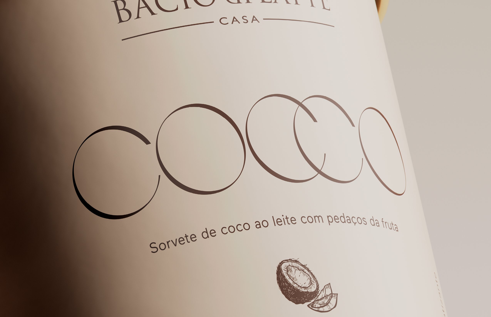
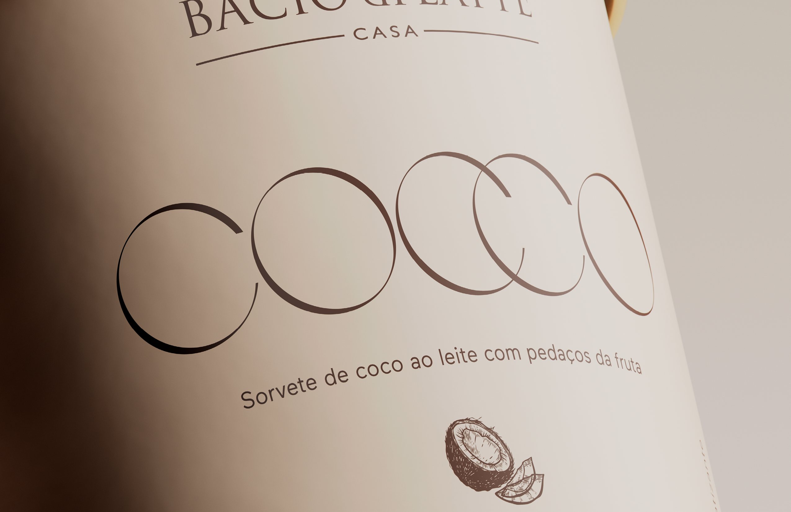

Bacio di Latte
Bacio di Latte it's one of the biggest and most iconic brands of italian gelato in Brazil. Already stablished in the market with several gelato shops across the country, in 2020 they decided to take the gelato to the costumers houses.
The entire packaging visual language was supported by elements of Art Deco Italiano, such as carved metalwork, ornaments and other details of this artistic style. The color’s palette makes reference to the flavors of ice cream: always in pastel tones.
Made at REBU
Client: Bacio di Latte
Year: 2020
Creative Direction: Pedro Mattos, Fernando Andreazi
Graphic design: Pedro Mattos, Camilla Mattos, Bruno Faiotto
3D: Bruno Faiotto
Copywriters: Fernando Andreazi, Giovanna Marques, Fernanda Damas
Fonts: Love, Maax.


 
